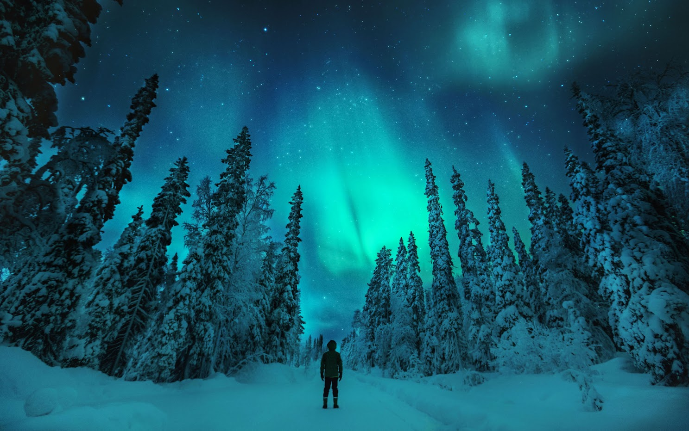

THE OTHER WORLDLY AURORA borealis, or northern
lights, begin high in the earth's
atmosphere—
at altitudes from
60 to more than 250 miles— when charged particles from the
sun become trapped in
the Earth's magnetic field. The result
is a colorful, dancing light show.
